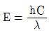
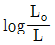
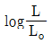
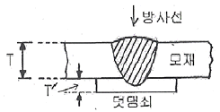
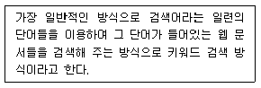

방사선비파괴검사기사(구) (2008-09-07 기출문제)
1과목: 방사선투과시험원리
1. 방사성 동위원소 중 Cs-137 의 반감기는?
- 약 74.3일
- 약 129일
- 약 5.3년
- 약 30.1년
(정답률: 알수없음)

2. γ선의 에너지를 E, 파장을 λ, 광속도를 C 라 할 때,

로 나타낸다. 이 때 h 가 의미하는 것은?- Planck 상수
- 진공의 유전율
- Boltzman 정수
- 광자(光子)의 spin수
(정답률: 알수없음)
3. 방사선투과시험에서의 입상성에 관한 설명이다. 틀린 것은?
- 감광 속도가 느린 필름은 낮은 입상성을 나타낸다.
- 현상시간을 증가시키면 상의 입상성도 증가한다.
- 필름의 입상성은 방사선 투과량이 증가함에 따라 증가한다.
- 필름의 입상성의 증가율은 필름의 종류와는 무관한 함수이다.
(정답률: 알수없음)
4. Ir-192 점선원으로부터 5m 거리에 있는 작업종사자가 받는 피폭방사선량이 1R/h 이다. 작업종사자의 피폭 방사선량을 20mR/h 이하로 하려면 철 차폐벽의 두께는 얼마이어야 하는가? (단, 철의 선형흡수계수 : 0.046㎜-1이다.)
- 약 40mm
- 약 55mm
- 약 70mm
- 약 85mm
(정답률: 알수없음)
5. 방사선투과사진의 농도(D)는 입사광의 강도를 Lo, 투과광의 강도를 L 이라 할 때 어떻게 표시되는가?


- ln(Lo - L)
- ln(L - Lo)
(정답률: 알수없음)
6. 방사선투과시험시 전류 5mA 로 거리 30cm, 30초의 노출시간으로 양질의 사진을 얻었다. 동일한 사진을 얻으려면 3mA, 거리 60cm 의 조건에서 약 얼마의 노출 시간이 필요한가?
- 50초
- 100초
- 150초
- 200초
(정답률: 알수없음)
7. 다음 중 60kV 의 에너지를 내는 X선발생장치에서 방출하는 X선의 최소 파장은 약 몇 Å 인가?
- 0.1
- 0.2
- 0.3
- 0.4
(정답률: 알수없음)
8. 다음 중 단조품의 내부결함을 검출하는데 가장 적합한 비파괴검사법은?
- 자분탐상시험법
- 초음파탐상시험법
- 침투탐상시험법
- 와전류탐상시험법
(정답률: 알수없음)
9. 다른 비파괴검사법과 비교했을 때 와전류탐상시험의 설명으로 옳은 것은?
- 고온의 조건하에서 검사가 불가능하다.
- 관, 환봉 등에 대한 On-line 생산품의 검사가 불가능하다.
- 전기적 신호가 복잡하여 결과기록의 보존이 불가능하다.
- 표면 아래 깊은 곳에 있는 결함의 검출이 불가능하다.
(정답률: 알수없음)
10. 다른 누설검사법과 비교하여 기포누설시험의 장점으로 옳은 것은?
- 대체로 시험방법이 단순하다.
- 총 누설률을 검출할 수 있다.
- 시험 결과들이 대부분 정량적이다.
- 아주 높은 감도의 시험을 할 수 있다.
(정답률: 알수없음)
11. 강제 대형 압력용기에 부착된 노즐의 표면 결함을 검출하기에 가장 적합한 비파괴검사법은?
- 누설검사
- 자분탐상시험
- 방사선투과시험
- 초음파탐상시험
(정답률: 알수없음)
12. 다음 중 용접부의 결함이 아닌 것은?
- 균열
- 콜드셧
- 용입불량
- 슬래그 개입
(정답률: 알수없음)
13. 초음파탐상시험에서 깊이 방향으로 인접한 두 불연속의 분해능을 증가시키기 위해 가장 좋은 방법은?
- 파장을 길게 한다.
- 주파수를 감소시킨다.
- 펄스 지속시간을 짧게 한다.
- 송신펄스의 강도를 증가시킨다.
(정답률: 알수없음)
14. 다음 중 자성체인 시험체에 침투탐상시험보다 자분탐상시험의 신뢰성이 우수한 경우로 옳은 것은?
- 단면 급변부의 탐상
- 이종 재질의 경계면의 탐상
- 알루미늄 용접부의 표면 기공의 탐상
- 운전 중 발생한 미세한 표면균열의 탐상
(정답률: 알수없음)
15. 다음 중 기포누설시험에 사용되는 발포액의 구비 조건으로 틀린 것은?
- 점도가 높을 것
- 젖음성이 좋을 것
- 온도에 의한 열화가 없을 것
- 진공하에서 증발하기 어려울 것
(정답률: 알수없음)
16. 다음 중 어금니로 쓰기 위해 만든 세라믹 인공 치아의 갈라짐 검사에 가장 적합한 비파괴검사법은?
- 방사선투과시험
- 초음파탐상시험
- 자분탐상시험
- 침투탐상시험
(정답률: 알수없음)
17. 관의 내경이 2.5cm 이고 내삽형 프로브의 코일 외경이 2.0cm 이면 와전류탐상시험의 충전율은 몇 % 인가?
- 64%
- 80%
- 125%
- 156%
(정답률: 알수없음)
18. 시험체의 표면에 대한 정보를 효율적으로 얻기 위해 행하는 비파괴검사법으로 볼 수 없는 것은?
- 육안검사
- 자분탐상시험
- 와전류탐상시험
- 방사선투과시험
(정답률: 알수없음)
19. 각종 비파괴검사법에서 시험체 내의 결함정보를 얻을 때 의사지시를 만들거나 또는 결함검출 능력을 저하시키는 요인과의 연결이 잘못된 것은?
- 방사선투과시험 : 산란선
- 초음파탐상시험 : 표면 거칠기
- 자분탐상시험 : 전극 지시
- 와전류탐상시험 : 적산효과
(정답률: 알수없음)
20. 열처리 공정이 끝난 항공우주용 비자성 재료의 표면 균열검출을 위해 검사속도가 빠르고 비용이 저렴하여 널리 활용되고 있는 비파괴검사법은?
- 자분탐상시험
- 초음파탐상시험
- 침투탐상시험
- 방사선투과시험
(정답률: 알수없음)
2과목: 방사선투과검사
21. 계조계에 근접한 모재 부분의 농도를 A, 계조계의 중앙부분의 농도를 B 라 할 때 계조계의 값은?
- A-B/A
- B-A/A
- A/B-A
- B/B-A
(정답률: 알수없음)
22. 현상된 방사선 투과사진은 규정하는 상질을 나타내어야 한다. 다음 중 상질을 확인하는 항목이 아닌 것은?
- 계조계의 값
- 결함의 유무
- 시험부의 사진 농도
- 투과도계의 식별 최소 선지름
(정답률: 알수없음)
23. 공업용 방사선투과 사진을 촬영할 때 기본적인 3가지 필수사항이 아닌 것은?
- 필름
- 차폐물
- 방사선 선원
- 시험 대상물
(정답률: 알수없음)
24. 처음 촬영했을 때보다 선원의 크기가 5배, 시험체와필름사이의 거리가 3배, 선원과 시험체사이의 거리가 3배로 촬영되었다면 기하학적 불선명도는 처음의 몇 배가 되는가?
- 1.2
- 5
- 10
- 12
(정답률: 알수없음)
25. 투과사진에 나타날 시험체의 상을 만들어 주는 방사선량은 다음 중 어떤 것에 가장 영향을 많이 받는가?
- 필름의 종류
- 시편의 흡수특성
- 투영면적의 크기
- 방사선의 입사각
(정답률: 알수없음)
26. 방사선투과검사시 시험체의 투과 방향으로 산란되는 것을 무엇이라 하는가?
- 전방산란
- 측면산란
- 후방산란
- 외각산란
(정답률: 알수없음)
27. 두께 20mm 의 알루미늄 용접부를 Ir-192 로 촬영할 때 알루미늄의 강에 대한 등가계수는 0.35 라면 강의 노출도표에서 읽어야 할 시험체의 두께는 몇 mm 인가?
- 7.0
- 13.0
- 20.35
- 27.15
(정답률: 알수없음)
28. 방사선 투과사진상에 황색얼룩이 생겼다. 이러한 얼룩이 발생치 않도록 하기 위한 대책으로 옳은 것은?
- 정착액을 교체하고 충분히 교반시킨다.
- 적정온도와 습도에서 서서히 건조시킨다.
- 저감도 필름과 증감계수가 낮은 증감지를 사용한다.
- 현상액을 충분히 교반하고 현상시간을 충분히 한다.
(정답률: 알수없음)
29. 다음 중 방사선투과 사진상에 나타나는 주강품의 결함이 아닌 것은?
- 수축관
- 모래물림
- 용입부족
- 슬래그개재물
(정답률: 알수없음)
30. 산화납으로 코팅된 납스크린을 필름과 함께 넣고 밀봉한 형태의 필름(Envelope-Pack Film)에 관한 설명으로 틀린 것은?
- 이물질 혼입을 방지하여 청결하다.
- 납의 유효두께가 커서 산란방사선의 제거효율이 높다.
- 제한된 공간에 필름을 부착하고자 할 때 유용하다.
- 로딩 과정에서 발생될 수 있는 인공흠을 방지할 수 있다.
(정답률: 알수없음)
31. 방사선투과검사에서 투과사진의 선명도(Sharpness)를 저하시키는 원인으로 볼 수 없는 것은?
- 상의 반음영(Penumbra)
- 상의 왜곡(Distortion)
- 상의 확대(Magnification)
- X선의 경사효과(Heel effect)
(정답률: 알수없음)
32. 미시방사선투과검사(micro-radiography)에 사용되는 X선발생장치의 일반적인 전압의 사용 범위한계는?
- 5 ~ 50kV
- 60 ~ 100kV
- 110 ~ 150kV
- 160 ~ 200kV
(정답률: 알수없음)
33. 직접 노출법에 의한 중성자투과검사에서 변환자로 사용되는 물질이 아닌 것은?
- Cu(Copper)
- Rh(Rhodium)
- Cd(Cadmium)
- Gd(Gadolinium)
(정답률: 알수없음)
34. 방사선투과검사는 원근투시가 불가능하여 결함의 깊이를 일반적으로 알 수 없으나, 사람의 두 눈 사이 만큼 떨어진 두 위치에서 얻은 두 개의 방사선 투과사진을 입체경을 이용하여 각각의 눈이, 각각의 투과사진을 관찰함으로써 결함의 깊이를 알 수 있는 특수방사선투과검사법이 있다. 이 검사법은?
- 중성자투과검사(Neutron radiography)
- 입체방사선투과검사(Stereo radiograhpy)
- 확대촬영법(Geometric enlargement method)
- 미시 방사선투과검사법(Micro radiography)
(정답률: 알수없음)
35. 선원과 필름간 거리가 60cm 일 때 적정한 노출시간이 1분이라면 동일 조건에서 선원과 필름간 거리를 30cm로 단축시켰을 때 적정한 노출시간은?
- 15초
- 30초
- 3분
- 4분
(정답률: 알수없음)
36. 강용접 이음부의 결함에 대한 설명이다. 틀린 것은?
- 언더컷은 모재의 표면과 용접 금속이 접하는 부분에 생기는 틈을 말한다.
- 텅스텐개재물은 가스 용접시 발생되어지며, 투과사진상에서 검게 나타난다.
- 초층 용접아크가 불안정한 경우 루트부에 가늘고 긴 선상의 기공이 발생되는데, 이것을 중공비드(hollow bead)라 한다.
- 융합불량은 개선면(용접 금속과 모재사이), 패스간(Pass 와 Pass 사이)에 충분히 융합되지 않은 경우 발생하는 결함이다.
(정답률: 알수없음)
37. 방사선투과검사에서 시험체 콘트라스트에 영향을 미치는 인자가 아닌 것은?
- 시험체의 두께차
- 방사선의 에너지
- 시험체의 밀도차
- 현상조건(시간, 온도)
(정답률: 알수없음)
38. Ir-192 선원을 사용, 고감도 투과촬영법에 의해 30mm 두께 강판 용접부위를 검사하고자 할 때 어느 금속 증감지를 사용하는 것이 좋은가?
- Pb
- Cu
- Fe
- W
(정답률: 알수없음)
39. X선을 이용한 방사선투과검사에서 필름의 선원 쪽에 납스크린을 붙여 촬영하는 주된 이유는?
- 후방산란을 줄인다.
- X선 에너지를 증가시킨다.
- Background radiation을 감소시킨다.
- 저에너지 X선을 흡수하여 투과사진의 명료도를 높인다.
(정답률: 알수없음)
40. 250kVp X선 장치로 연(납)박증감지를 사용하여 촬영할 수 있는 강시험체의 두께로 옳은 것은? (단, 필름은 타입 III 까지 사용한다.)
- 0.1인치
- 3인치
- 7인치
- 10인치
(정답률: 알수없음)
3과목: 방사선안전관리,관련규격및컴퓨터활용
41. 스테인리스강 용접부의 방사선투과 시험방법 및 투과사진의 등급분류 방법(KS D 0237)에 따라 그림의 스테인리스강 용접부에 대하여 투과검사를 하려고 한다. 재료 두께는 어떻게 구하는가? (단, 그림에서 T 는 모재 두께[㎜], T´ 는 덧댐쇠두께[㎜]이다.)

- T + 2㎜
- T + T′ + 2㎜
- T + T′ + 4㎜
- 1.1 x (T + T′)
(정답률: 알수없음)
42. 다음 중 방사선의 조사선량을 나타내는 단위는?
- Ci
- C/kg
- Gy
- Sv
(정답률: 알수없음)
43. 강 용접이음부의 방사선투과 시험방법(KS B 0845)에서 모재 두께가 12㎜ 인 평판 맞대기 용접이음부를 촬영하는 경우에 사용할 계조계로 옳은 것은?
- 15형
- 20형
- 25형
- 30형
(정답률: 알수없음)
44. 원자력법에서 규정하는 피폭 저감화의 직접적인 조치로 볼 수 없는 것은?
- 건강진단을 실시한다.
- 적절한 작업 공간을 확보한다.
- 방사선차폐 및 시설의 적절한 배치를 한다.
- 선량 저감에 효과적인 재료 및 기기를 사용한다.
(정답률: 알수없음)
45. 방사선 검출기 중 비례계수관과 GM 계수관에 대한 비교설명으로 틀린 것은?
- 2가지 모두 불감시간이 같다.
- 모두 가스 증폭작용을 활용한다.
- GM 계수관은 출력전압이 수 V 정도이다.
- 모두 기체의 이온화를 이용하여 검출한다.
(정답률: 알수없음)
46. 보일러 및 압력용기에 대한 방사선투과검사(ASME Sec.V, Art.22 SE-94)에서 투과도계의 두께는 요구되는 상질에 따라 결정된다. 63.5mm 두께의 철을 검사한다면 2-2T 에 해당하는 투과도계의 두께로 옳은 것은?
- 12.7mm
- 6.35mm
- 1.27mm
- 0.64mm
(정답률: 알수없음)
47. 보일러 및 압력용기에 대한 방사선투과검사(ASMESec.V, Art.2)에 의거 28mm(1.1인치) 두께의 시험체를 촬영시 필름 측에 부착할 유공형 투과도계의 구멍 번호는?
- 10
- 20
- 25
- 30
(정답률: 알수없음)
48. 강 용접이음부의 방사선투과 시험방법(KS B 0845)에서 결함의 종류 중 그 결함이 용접 이음부의 강도 저하에 미치는 영향을 설명한 것으로 틀린 것은?
- 둥근 블로홀은 주로 결함에 의한 단면적의 감소가 구조물의 강도를 저하시킨다.
- 가늘고 긴 슬래그 혼입은 주로 결함부의 응력 집중이 용접 이음부의 강도를 저하시킨다.
- 파이프는 주로 결함에 의한 단면적의 감소가 구조물의 강도를 저하시킨다.
- 갈라짐은 응력 집중이 매우 크며 용접 이음부의 강도를 저하시킨다.
(정답률: 알수없음)
49. 원자력법에서 일반인에 대한 년간 유효선량한도를 얼마로 정하고 있는가?
- 1mSv
- 5mSv
- 10mSv
- 15mSv
(정답률: 알수없음)
50. 강 용접이음부의 방사선투과 시험방법(KS B 0845)에서 용접이음부의 덧살을 제거하여 촬영하는 것을 전제로 하여 상질의 요구값이 결정되어 있는 투과사진의 상질의 종류는?
- A급
- B급
- F급
- P1급
(정답률: 알수없음)
51. 1.5MeV γ선에 대한 콘크리트의 질량감쇠계수는 0.⑤19cm2/g, 밀도는 2.35g/cm3 이다. 이 γ선에 대한 콘크리트의 반가층은 약 얼마인가?
- 3.6cm
- 4.3cm
- 5.7cm
- 6.9cm
(정답률: 알수없음)
52. 보일러 및 압력용기에 대한 방사선투과검사(ASMESec.V, Art.22 SE-94)에서 수동현상시 새 정착액에필름을 넣어둘 수 있는 최대시간은?
- 5분
- 10분
- 15분
- 30분
(정답률: 알수없음)
53. 다음 중 1Bq 과 같은 것은?
- 2.7×10-11Ci
- 3.7×1010dps
- 2.58×10-4Sv
- 1.4×10-11 Gy
(정답률: 알수없음)
54. 보일러 및 압력용기에 대한 방사선투과검사(ASMESec.V, Art.2)에서 규정하는 pin-hole법은 무엇을 측정하기 위한 방법인가?
- 선원의 위치
- 선원의 크기
- 선원-시편간 거리
- 투과사진에 나타난 최소 불연속 크기
(정답률: 알수없음)
55. 원자력법에서 정한 방사선 작업종사자의 유효선량한 도로 옳은 것은?
- 연간 50mSv를 넘지 않는 범위에서 5년간 100mSv
- 연간 50mSv를 넘지 않는 범위에서 5년간 200mSv
- 연간 100mSv를 넘지 않는 범위에서 5년간 300mSv
- 연간 100mSv를 넘지 않는 범위에서 5년간 400mSv
(정답률: 알수없음)
56. 데이터통신 시스템 중 데이터 터미널 장치(DTE)의 기능으로 볼 수 없는 것은?
- 입출력 기능
- 신호 변환기 기능
- 전송 제어 기능
- 기억 기능
(정답률: 알수없음)
57. 인터넷의 개념이 아닌 것은?
- 세계를 연결하는 컴퓨터 통신망
- 여러 개의 네트워크가 연결된 통신망들의 통칭
- 유닉스 운영체제만을 위한 세계적인 컴퓨터 통신망
- TCP/IP 프로토콜을 기반으로 하는 컴퓨터 통신망
(정답률: 알수없음)
58. 다음 중 인터넷에서 IP 주소 대신 사용할 수 있는 것은?
- 호스트명
- 고퍼
- HTTP
- 도메인 네임
(정답률: 알수없음)
59. 운영체제의 성능평가와 거리가 먼 것은?
- 응답 시간
- 신뢰도
- 사용 가능도
- 비용
(정답률: 알수없음)
60. 다음이 설명하고 있는 웹 페이지 검색엔진의 유형은?

- 주제별 검색
- 메뉴 검색
- 웹 인덱스 검색
- 지능형 검색
(정답률: 알수없음)
4과목: 금속재료학
61. 저 합금강의 2단 템퍼 취성에 대한 설명으로 틀린 것은?
- 결정립계에 불순물이 편석하는 것은 평형적 현상이다.
- 템퍼링한 합금강을 375~560℃ 온도범위에서 등온적으로 시효처리하거나 템퍼링한 다음 서냉하면 발생한다.
- 입계취성을 일으키는 불순물 편석의 속도와 양은 강의 전조성(全組性)에 의해서 결정된다.
- 연성-취성 전이 온도는 직접 입계의 불순물 농도에 의해서 결정되는데 불순물 영향의 정도는 P ＞Sn ＞ Sb 순이다.
(정답률: 알수없음)
62. 재료의 연성을 알기 위한 것으로 구리판, 알루미늄판 등의 판재를 가압성형하여 변형능력을 시험하는 것은?
- 크리프시험
- 스프링시험
- 마모시험
- 에릭센시험
(정답률: 알수없음)
63. 다음 중 라우탈(Lautal)의 합금 성분으로 옳은 것은?
- Cu - Si - P
- Al - Ni - Pb
- Al - Cu - Si
- W - Ni - Mg
(정답률: 알수없음)
64. 산소나 탈산제를 품지 않은 구리로 전도성이 좋고 수소취성도 없어 전자기기 등에 사용되는 것은?
- 무산소동
- 탈탄동
- 전기동
- 정련동
(정답률: 알수없음)
65. 다음 중 비정질 합금의 제조 방법이 아닌 것은?
- 금속액체의 액체급냉법
- 고체침탄법
- 금속가스의 증착법
- 전기 또는 화학도금법
(정답률: 알수없음)
66. 전자강판(규소강판)에 요구되는 특성으로 옳은 것은?
- 철손(鐵損)이 클 것
- 투자율이 높고 포화자속밀도가 높을 것
- 사용 중에 자기 시효 변화가 클 것
- 박판을 적층하여 사용할 때 층간 저항이 낮을 것
(정답률: 알수없음)
67. Al-4%Cu 합금을 시효처리할 때, 관찰되지 않는 것은?
- GP Zone
- θ상
- θ‘상
- η상
(정답률: 알수없음)
68. 엘렉트론(Elektron) 합금에 대한 설명으로 옳은 것은?
- Mg - Al 계 합금으로서 소량의 Zn 과 Mn을 첨가한 합금이다.
- Ni - Fe 계 합금으로 고강도 합금이다.
- Sn - Mg - Si - Mn 계 합금으로 시효경화성 합금이다.
- Al - Cu 계 합금으로서 전기전도도를 좋게 하기위하여 소량의 Ag을 첨가한 합금이다.
(정답률: 알수없음)
69. 베어링 합금으로 화이트메탈보다 내하중성이 커서대부분 강대금(steel back)에 접착하여 바이메탈 베어링(bimetal bearing)으로 사용되는 일명 켈밋(Kelmet)의 주요 합금 조성은?
- Pb - Ta
- Pb - Ca
- Cu - Pb
- Cu - Ti
(정답률: 알수없음)
70. Fe-C 평형 상태도에서 존재하지 않는 불변 반응은?
- 공정반응
- 공석반응
- 포정반응
- 포석반응
(정답률: 알수없음)
71. 은백색의 금속으로 비중이 1.85 이며, 중성자를 잘통과시키므로 원자로 연료의 피복제, 중성자의 반사재나 원자핵분열기에 사용되는 금속은?
- Ge
- Be
- Si
- Te
(정답률: 알수없음)
72. 다음 중 분말야금에 대한 설명으로 틀린 것은?
- 생산할 수 있는 제품의 크기와 형상에는 제한이 없다.
- 고용도의 제한이 없기 때문에 다양한 합금설계를 할 수 있다.
- 최종제품의 형상으로 가공할 수 있어 절삭가공을 생략할 수 있다.
- 용융점이 높은 재료의 경우에도 용융하지 않고 제품을 제조할 수 있다.
(정답률: 알수없음)
73. 가단주철의 성질에 대한 설명으로 틀린 것은?
- 주조성이 우수하여 복잡한 주물을 만들 수 있다.
- 내식성, 내충격성, 내열성이 우수하고 절삭성이 좋다.
- 강도, 내력이 높은 편이며 경도는 Si 량이 많을수록 낮다.
- 흑심가단주철의 인장강도는 30~40kgf/mm2 이다.
(정답률: 알수없음)
74. 다음 중 항온냉각 방법이 아닌 것은?
- 마퀜칭(Marquenching)
- 마템퍼링(Martempering)
- 인상 담금질(Time quenching)
- 오스템퍼링(Austempering)
(정답률: 알수없음)
75. 투과전자현미경에 의한 시험편 표면구조를 관찰하기 위한 방법으로 사용되는 레프리카(Replica)법이 아닌 것은?
- 플라스틱 레프리카법
- 탄소 레프리카법
- 영상 레프리카법
- 산화물 레프리카법
(정답률: 알수없음)
76. 침탄은 C 원자의 확산에 의해 일어난다. 900℃ 에서 10시간 침탄했을 때 침탄 깊이가 1.2mm 이었다면 1.6mm 의 침탄층을 얻기 위해서는 같은 온도에서 약 몇 시간이 필요한가? 단, Harris 의 식을 이용한다.)
- 5
- 18
- 35
- 48
(정답률: 알수없음)
77. 다음 중 백금(Pt)에 대한 설명으로 틀린 것은?
- 회백색으로 면심입방격자를 갖는다.
- 비중은 약 21.46 이며, 용융점은 약 1774℃ 이다.
- 내열성 및 고온저항성이 우수하여 용해로, 광학기구 등의 제작에 널리 사용된다.
- 백금의 재결정은 쌍정 생성이 많은 단면체 조직으로 가공성이 우수하다.
(정답률: 알수없음)
78. 청동의 주조시 일어나는 편석에 대한 설명으로 틀린 은?
- 냉각속도가 클수록 편석이 많이 일어난다.
- 확산속도가 작을수록 편석이 많이 일어난다.
- 응고구간이 확장될수록 편석이 많이 일어난다.
- 개재물이 적을수록 편석이 많이 얼어난다.
(정답률: 알수없음)
79. Cartridge brass 에 대한 설명으로 틀린 것은?
- 가공용 황동이다.
- 70%Cu + 30%Zn 황동이다.
- 판, 봉, 관, 선을 만든다.
- 금박대용으로 사용하며, 톰백이라고도 한다.
(정답률: 알수없음)
80. 고망간(12~14%Mn) 강(steel)을 약 1⑤0℃ 부근에서 급냉하는 수인법(水靭法)을 실시하였을 때 상온에서 나타나는 조직은?
- 시멘타이트(Cementite)
- 오스테나이트(Austenite)
- 레데뷰라이트(Ledeburite)
- 페라이트(Ferrite)
(정답률: 알수없음)
5과목: 용접일반
81. 정격 2차전류가 300A, 정격 사용율이 40%인 아크용접기에서 200A로 용접시의 허용사용율(%)은?
- 40
- 60
- 90
- 100
(정답률: 알수없음)
82. 용접 홈 설계시 고려 해야 할 사항이 아닌 것은?
- 홈의 단면적은 가능한 크게 한다.
- 루트 반지름은 가능한 크게 한다.
- 루트간격의 최대치는 사용 용접봉의 지름을 한도로 한다.
- 적당한 루트간격과 루트면을 만들어 준다.
(정답률: 알수없음)
83. 탄산가스 아크 용접기로 두께가 4mm인 박판(연강판)을 용접전류 150A로 I형 맞대기 용접하고자 할때 적당한 아크 전압[V]은?
- 16 ~ 19
- 20 ~ 23
- 23 ~ 26
- 27 ~ 29
(정답률: 알수없음)
84. 아크용접에서 언더컷의 원인이 되는 것과 관계없는 것은?
- 아크 길이가 너무 길 때
- 용접속도가 적당하지 않을 때
- 부적당한 용접봉을 사용할 때
- 전류가 너무 낮을 때
(정답률: 알수없음)
85. 피복 금속 아크 용접봉에 도포(塗布)되는 용제(Flux)의 기능 설명으로 틀린 것은?
- 스패터 발생을 적게 한다.
- 아크(arc)의 발생, 안전 및 유지를 용이하게 한다.
- 가스를 발생시켜서 대기(大氣)의 침입을 방지한다.
- 적당한 아크 전압과 용융점이 높은 슬랙을 만든다.
(정답률: 알수없음)
86. 무부하 전압이 80V이고, 아크전압이 30V인 AW -200 교류용접기를 사용할 때, 내부손실을 4kW라 하면 이 용접기의 효율과 역률은?
- 효율 : 62.5%, 역률 : 60%
- 효율 : 62.5%, 역률 : 54%
- 효율 : 54%, 역률 : 62.5%
- 효율 : 60%, 역률 : 62.5%
(정답률: 알수없음)
87. 가스용접시 저압(발생기식) 토치에 사용되는 아세틸렌의 압력은 약 몇 kgf/cm2 이하인가?
- 0.0⑤
- 0.07
- 0.1
- 1
(정답률: 알수없음)
88. 용접시 발생하는 회전 변형의 방지대책 설명으로 틀린 것은?
- 필요에 따라 용접 끝 부분을 구속한다.
- 미리 수축을 예측하여 그 만큼 벌려 놓는다.
- 길이가 긴 경우 2명 이상의 용접사가 이음의 길이를 정해 놓고 동시에 용접을 시작한다.
- 용접시 열을 될 수 있는 한 많이 받게 한다.
(정답률: 알수없음)
89. 용접기에서 멀리 떨어져 작업을 할 때 작업위치에서 전류를 조정할 수 있는 장치는?
- 원격제어 장치
- 고주파 장치
- 핫 스타트 장치
- 전격 방지 장치
(정답률: 알수없음)
90. 불활성가스 텅스텐 아크 용접(TIG용접)에서 청정작용(Cleaning action) 설명으로 가장 적합한 것은?
- 텅스텐 전극에 의한 정류작용
- 정극성에서는 전자가 모재에 빠르게 충돌하기 때문에 모재에 열을 발생시키는 작용
- 헬륨가스를 사용하는 정극성에서는 아크가 그 주변의 모재표면에 산화막을 제거하는 작용
- 아르곤(Ar) 가스를 사용하는 직류 역극성에서는 아크가 그 주변의 모재표면에 산화막을 제거하는 작용
(정답률: 알수없음)
91. 산소-아세틸렌 가스용접 작업시 전진법과 비교한 후진법의 특징 설명으로 틀린 것은?
- 용접변형이 작다.
- 열 이용률이 좋다.
- 용접속도가 느리다.
- 용착금속의 조직이 미세하다.
(정답률: 알수없음)
92. 용접봉 탄산가스의 용기도색으로 맞는 것은?
- 녹색
- 청색
- 황색
- 백색
(정답률: 알수없음)
93. 주철의 보수용접 방법 중 모재와 융합이 잘되는 용접봉으로 용착시킨 후 나중에 고장력강봉이나 연강과 융합이 잘 되는 모넬메탈봉으로 용접하는 방법은?
- 스터드법
- 비녀장법
- 버터링법
- 로킹법
(정답률: 알수없음)
94. 전류가 높고 아크 길이가 특히 긴 경우에 발생하며 용접금속의 비산에 의한 용접봉의 손실을 초래하는 결함은?
- 기공
- 오버 랩
- 설퍼균열
- 스패터
(정답률: 알수없음)
95. 일렉트로 슬래그 용접법에 대한 특징 설명으로 틀린 것은?
- 용접 진행중 용접부를 직접 관찰할 수 있다.
- 최소한의 변형과 최단 시간의 용접법이다.
- 용접 능률과 용접 품질이 우수하다.
- 높은 입열로 인하여 용접부의 기계적 성질이 저하될 수 있다.
(정답률: 알수없음)
96. 용접부의 비파괴 시험법에 해당되지 않는 것은?
- 부식시험
- 침투시험
- 누설시험
- 음향시험
(정답률: 알수없음)
97. 용접전류가 400A, 아크 전압은 35V, 용접속도가 20cm/min 일 때 단위 길이당 용접 입열은 몇 J/cm 인가?
- 42000
- 425000
- 44000
- 45500
(정답률: 알수없음)
98. 용접재를 서로 맞대어 가압하면서 대전류를 통하고 축 방향에 큰 압력을 주어 용접하는 전기저항 용접법은?
- 업셋 용접
- 프로젝션 용접
- 심 용접
- 마찰 용접
(정답률: 알수없음)
99. 아세틸렌가스와 접촉하면 폭발성 화합물을 생성하는 금속은?
- 강
- 주철
- 구리
- 알루미늄
(정답률: 알수없음)
100. 용접법 중 압접(pressure welding)에 속하는 것은?
- 플래시 용접
- 전자 빔 용접
- 테르밋 용접
- 피복금속 아크 용접
(정답률: 알수없음)